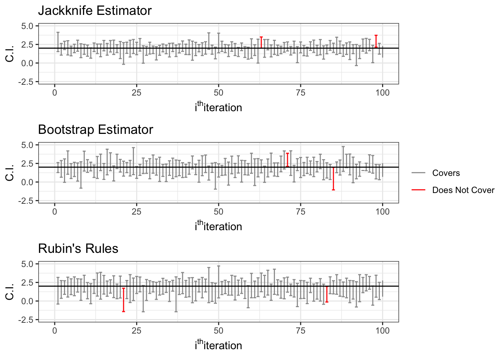
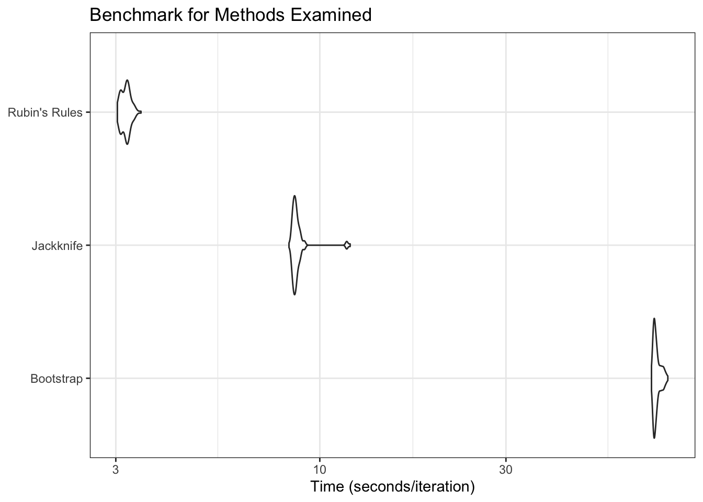

5 Results
Per the Methods section, the performance of the proposed jackknife estimator was compared to two leading methods in the literature, Rubin’s rules following multiple imputation and Bootstrap resampling prior to multiple imputation. The methods were compared concerning the coverage probabilities they generated, the widths of their respective confidence intervals, their computational expense, and the bias of their point estimators.
5.1 Point Estimates
All methods, perhaps with the exception of Rubin’s rules, produced reasonable point estimates with minimal bias. Rubin’s rules resulted in slightly anticonservative point estimates with greater standard deviation, indicative of a statistically inefficient estimator with high variability. This finding is unsurprising given the literature on Rubin’s rules and its performance under uncongeniality.
In contrast, it is noted that both resampling methods examined provide nearly unbiased point estimates with smaller standard deviations compared to Rubin’s rules. Again, given the literature on uncongeniality, this finding was unsurprising; however, given the lack of both empirical and theoretical justification for the bootstrap approach in small sample sizes, the desirable properties noted are worthy of further examination. Between all three methods, nevertheless, it is noted that the proposed jackknife estimator produced estimates with the smallest amount of bias, as well as the smallest standard deviation, an observation perhaps better observed in Section 5.1.2, where the distribution of the biases of the point estimates is compared. From the kernel density plots presented, it is evident that Rubin’s rules slightly underestimate the parameter. Compared to Rubin’s rules, both resampling approaches provide point estimates that are nearly unbiased; however, it is noted that the bootstrap estimates, despite being centered near zero, are slightly more dispersed compared to the jackknife estimates, which present as a narrow distribution centered at zero. This observation is justified by the values provided in Section 5.1.1 which demonstrate that the jackknife point estimates have a smaller standard deviation than the bootstrap approach and Rubin’s rules.
From a point estimation perspective, the statistically desirable properties of the jackknife estimator, alongside its theoretical and empirical justification when used with small sample sizes, yield it a desirable estimator.
5.1.1 Summary of Point Estimation Properties
| Method | Median Point Estimates | Mean Point Estimates | SD of Point Estimates |
|---|---|---|---|
| Jackknife | 1.971975 | 1.965713 | 0.3648634 |
| Bootstrap | 1.928350 | 1.921044 | 0.4442088 |
| Rubin’s Rules | 1.788012 | 1.750637 | 0.4962010 |
5.1.2 Distribution of Point Estimator Bias

5.2 Confidence Intervals
Over-coverage of confidence intervals is noted across all methods; however, particulary with the jackknife and bootstrap approaches, such over-coverage is only slightly over the nominal, as such, they are likely not of concern and can be explained, in part, by the Monte Carlo standard error for the true coverage proabability of a 95% confidence interval. Among the three methods noted, Rubin’s rules, by a significant margin, deviates from the nominal coverage, indicative of an overly conservative estimator. An argument could be made, particulary in the case of biological studies that an overly conservative estimator is safer than one that is anti-conservative; however, the statistical inefficieny created by conservative estimators can be of concern, particulary in instances where small sample sizes are present or the test being utilized already has low statistical power. Comparing these methods concerning confidence interval width, it is noted that both resampling approaches provide narrower confidence intervals, with the jackknife approach providing the narrowest confidence intervals by a wide margin. In instances where nominal, or near-nominal coverage is reached, narrower confidence intervals are indicative of more efficient estimators. Given the near-nominal coverage noted with the jackknife estimator, combined with the narrow confidence intervals it produces, its superiority to the two other methods may be inferred.
A visual overview of the coverage probabilities may be noted in Section 5.2.1, where zipper plots of the methods are presented utilizing a simple random sample of 100 observations from the Monte Carlo simulation results of all methods examined. Given the small number of subsamples examined for visual clarity, the plots may not be indicative of the larger results presented above; however, they provide an appreciation for the meaning of coverage probabilities.
| Method | Coverage Probability | Median C.I. Width | Mean C.I. Width | SD of C.I. Width |
|---|---|---|---|---|
| Jackknife | 97.67 | 1.610436 | 1.683248 | 0.5197257 |
| Bootstrap | 97.69 | 2.161853 | 2.228137 | 0.6423704 |
| Rubin’s Rules | 98.46 | 2.455640 | 2.537168 | 0.7230490 |
5.2.1 Zipper Plots for Confidence Interval Coverage

5.3 Performance Benchmark Results
Finally, the three methods are compared concerning their computational expenses. Comparing the two approaches, which require further resampling, it is noted that the bootstrap approach takes nearly ten times longer than the jackknife approach per iteration. Unsurprisingly, Rubin’s rules, which do not rely on any further resampling besides the one performed during multiple imputation, was the fastest approach. However, given its biased estimates under uncongeniality or misspecification, the computational advantage it brings to the table adds very little value.
Despite generating the same number of subsamples \((n = 200)\), albeit in contrasting manners, with the same number of imputations \((m = 2)\) and iterations \((maxit = 5)\), it is surprising that the bootstrap approach took nearly ten times longer per iterations to provide estimates. Regardless, the significantly reduced computational expense of the jackknife estimator yields it superior to the bootstrap approach under this particular scenario.
| Method | Median Time (seconds/iteration) | Mean Time (seconds/iteration) | SD of Time (seconds/iteration) |
|---|---|---|---|
| Jackknife | 8.658003 | 8.800480 | 0.6319727 |
| Bootstrap | 72.480187 | 73.012739 | 1.6246321 |
| Rubin’s Rules | 3.188039 | 3.183781 | 0.0913400 |
